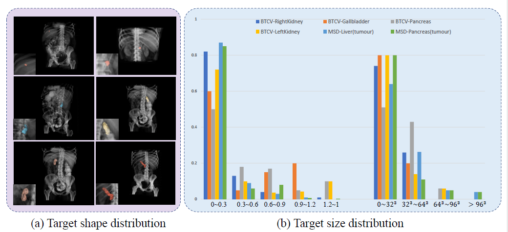
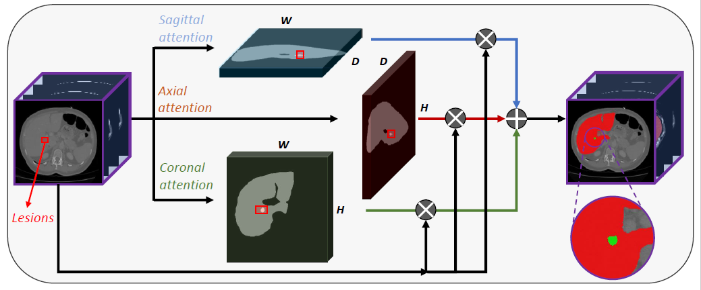

Yuncheng Jiang*, Zixun Zhang*, Shixi Qin, Yao Guo, Zhen Li, Shuguang Cui
The Chinese University of Hong Kong, Shenzhen
Medical image segmentation aims to automatically and accurately diagnose lesion and organ regions in either 2D or 3D medical images. This task is challenging mainly due to the following two aspects: 1) severe class imbalance of foreground (lesions) and background (entire 3D scans); 2) large variances in shape, location, and size of organs/lesions.
As shown in the above figure, on MSD chanllenge and BTCV datasets, the majority samples of the tumour target and small organ target are smaller than 0.6% to the whole 3D scans with various shapes.
In this paper, we propose an axis projection attention mechanism which projects the 3D features to 3 orthogonal 2D planes, i.e., sagittal, axial, and coronal views. Such a projection operation could mitigate the loss of critical information for small lesions in 3D scans. For instance, the original foreground-background area ratio of 3D features is O(1/n^3) before the projection, but after projection, the ratio can be promoted to O(1/n^2). As shown in the above figure.
@inproceedings{apaunet2022,
title={APAUNet: Axis Projection Attention UNet for Small Target Segmentation in 3D Medical Images},
author={Jiang, Yuncheng and Zhang, Zixun and Qin, Shixi and Guo, Yao and Li, Zhen and Cui, Shuguang},
booktitle={Proceedings of the Asian Conference on Computer Vision},
year={2022}
}